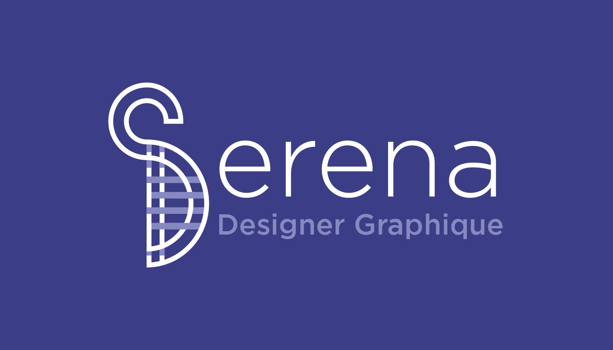

Pour créer mon logo, j’ai voulu concevoir un symbole qui incarne mon identité, mes valeurs et mes influences graphiques. Inspirée par mes racines capverdiennes, j'ai intégré des éléments du motif traditionnel Pano di terra.
Le pano di terra est un tissu généralement fabriqué à la main
sur des métiers à tisser. Il se caractérise
par des motifs géométriques et des grilles. Utilisé dans des vêtements, des accessoires et des décorations, le Pano di terra est un symbole culturel fort pour les Capverdiens.
Il représente leur histoire, leur identité, et leur
savoir-faire artisanal, qui s’est transmis de génération
en génération.
Mon logo se compose d’un "S" en haut, fusionné avec un "D" avec des lignes entrelacées et une structure géométrique, rappelant l'idée de fils qui se croisent pour créer une unité.

Mon identité visuelle se décline à travers mon propre motif, permettant de véhiculer la marque sans logo.
La charte graphique se compose de palettes de couleurs inspirées des paysages capverdiens : jaune et turquoise pour la mer et le soleil, violet pour les couchers de soleil, et rouge pour l’énergie de la culture. Ces palettes reflètent ma polyvalence et ma créativité.